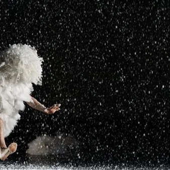

sab 24 ott · dalle 17:00
Teatro: Come il brutto anatroccolo
sabato 24 ottobre 2026 ore 17:00 da H. C. Andersen testo e regia Sandra Novellino e Delia De Marco con Alessandra Ardito, Delia De Marco, Giuseppe Marzio scenotecnica e luci Michelangelo Campanale musiche originali Mirko Lodedo costumi Maria Pascale cura del movimento Valentina…
 Indicazioni
Indicazioni
- Costi e prenotazioni
- Costo non indicato · Prenotazione non indicata
- Programma
- Programma da verificare. Apri la fonte ufficiale per orari e possibili aggiornamenti.
- In caso di maltempo
- Nessuna indicazione specifica pubblicata.
- Note
- Acquisito automaticamente dalla fonte.
L’EVENTO
Descrizione completa
sabato 24 ottobre 2026 ore 17:00 da H. C. Andersen
testo e regia Sandra Novellino e Delia De Marco
con Alessandra Ardito, Delia De Marco, Giuseppe Marzio
scenotecnica e luci Michelangelo Campanale
musiche originali Mirko Lodedo
costumi Maria Pascale
cura del movimento Valentina Elia
consulenza artistica Giovanni Guarino
aiuto regia Antonella Ruggiero
tecnico luci Vito Marra / Walter Mirabile
una produzione Crest – Taranto dai 4 anni
teatro d’attore
«Che cosa importa essere nati in un pollaio di anatre, quando si è usciti da un uovo di cigno?». Così chiosa Christian Andersen nel bel mezzo della sua favola, mettendo in chiaro una delle “letture” possibili delle avventure e disgrazie che capitano ad un anatroccolo nato più grosso e più alto dei suoi fratelli. Un piccolo che accetta il suo destino di “brutto”, senza nascondersi, ed anzi lascia le ali protettrici di mamma anatra per il suo solitario viaggio di conoscenza del mondo e dei suoi abitanti. Case, cortili, prati e canneti ogni volta nuovi e diversi, abitati da tanti e diversi animali che con alterigia rivendicano il diritto di imporre le proprie regole e abitudini solo perché sono arrivati prima ad abitare quell’angolo di mondo. Il loro angolo, il mondo. Brutto, l’anatroccolo, nel suo cammino non si arrenderà mai alle regole e alla superbia altrui, ed ogni volta riprenderà il viaggio, sopportando il vento ed il ghiaccio, accettando spintoni e insulti. Crescerà e imparerà a riconoscere e ad amare ciò che appartiene alla sua natura, come l’acqua e il volo. Si scoprirà cigno e, per la prima volta, non avrà paura ma pudore. Proprio come un bambino quando si scopre ragazzo.
Il Crest torna a parlare ai bambini più piccoli, con la fiaba che pone per eccellenza il problema della diversità, prefigurando il difficile e doloroso viaggio che fa approdare all’accettazione di sé, ad una consapevole autostima. Una fiaba, all’apparenza semplice e leggera, narrata con maestria e fantasia dagli attori e da musiche originali che segnano il cammino. Durata: 50 minuti
Prezzo unico
€ 5,00
Acquista su Vivaticket
IL PROGRAMMA
Programma e orari
Appuntamenti raccolti dalle fonti elencate. Dove manca un orario, non è ancora disponibile in questa scheda.
Programma pubblicato
- Dal 2026-10-24 al 2026-10-24
INFORMAZIONI UTILI
Prima di partire
- Controllare la fonte prima di partire.
ORGANIZZAZIONE